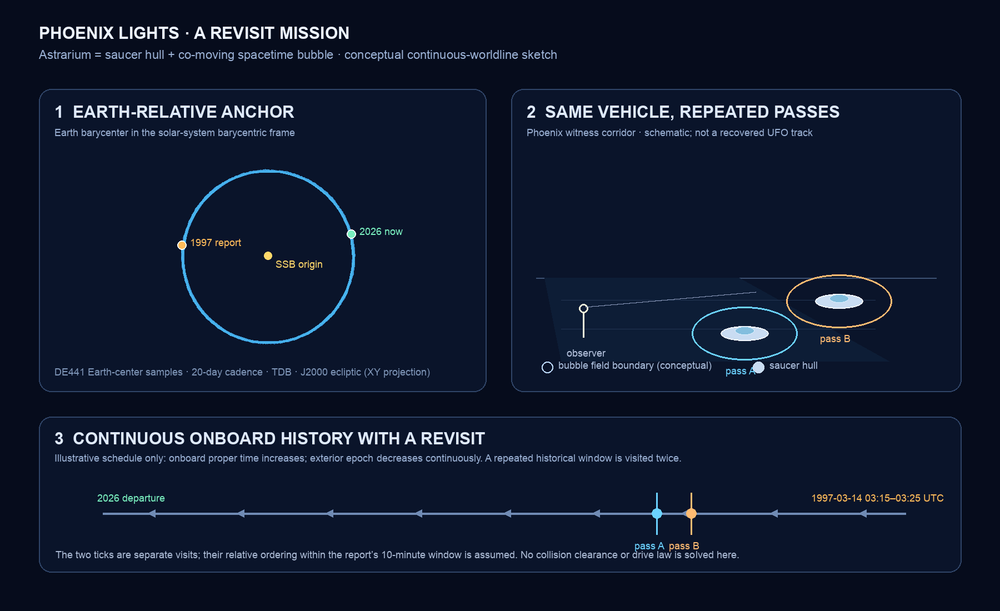

Travelling Through Space and Time#
Abstract#
Astrarium’s premise is that a navigator can travel through time as well as space. The user chooses a departure state and a destination state that may differ in both position and epoch; the vehicle follows a worldline through a celestial environment that changes along the way. Navigation therefore includes selecting a path through spacetime, determining the vehicle’s state, controlling its motion, and avoiding hazards encountered at the corresponding times. Treating time travel as possible is a product premise, not a result of general relativity or celestial ephemerides. It does not select a physical mechanism. Any implementation must declare a temporal-drive model and its consequences; the current planner does not.
Astrarium already has a shared time control, ephemeris-backed body positions, an initial Lambert transfer, numerical trajectory integration, and partial encounter screening. Its backward route is only reverse playback: it swaps the endpoints and epochs, solves an ordinary forward-time transfer, then presents that arc backward. The force model never integrates with decreasing dynamical time. It does not model traveler proper time, temporal propulsion, continuous temporal-drive dynamics, causality, or temporal arrival uncertainty. Its collision checks apply only to the synthetic spatial arc against available object histories at the matched epochs; they do not evaluate a continuous temporal-drive worldline. The planner therefore does not currently navigate a physical time traveler, even under the product’s “time travel is possible” premise. This paper defines the experience and a staged model for building it. Its current 3000 BCE–3000 CE clock is a software interval and model range.
Astrarium’s defining experience is to travel backward in environment epoch and space until the traveler literally becomes the event described by a historical UFO sighting. “Become” means the simulated vehicle occupies the reported location and time, creates a physically modeled appearance consistent with the witness record, and connects to the departure and subsequent route through one continuous worldline. A sighting is a target constraint, not proof of an extraterrestrial object or a license to teleport to a report’s coordinates. Every route segment and arrival is checked for collisions and dangerous encounters against the celestial bodies, spacecraft, atmosphere, terrain, and other modeled hazards present at the corresponding event. The mission also asks where and when reports describe an object appearing or disappearing: at the horizon, behind terrain or cloud, near a light source, during a maneuver, or simply at the limits of observation. Those patterns must be derived from coded report evidence with reporting and visibility biases represented; they must not be assumed to describe a literal physical transition.
Reference experience: become a historical UFO sighting#
The reference mission selects a UFO report and treats its described event as a constraint on a closed worldline, not as a free-standing earlier endpoint. The user chooses a departure event and plans a continuous trajectory whose full CTC passes through the report’s time, location, viewing direction, duration, and uncertainty while onboard proper time τ increases. At the encounter, the vehicle’s size, radiance, spectrum, motion, sound (if applicable), and visibility from witness locations are simulated; the user can compare the predicted appearance with the actual description. The remainder of the trajectory must return to the departure event (or a declared event-equivalent state) without a jump, and the history must satisfy the chosen self-consistency or branching rule. A report is evidence about witness observations, not verified vehicle telemetry, so its position, time, and interpretation must retain uncertainty and source provenance.
This is a deliberately conditional product scenario: known ephemerides describe where modeled celestial objects were, but do not provide a mechanism for reaching an earlier epoch. The temporal-drive model must define the worldline and the causal rules. The selected report constrains an encounter; it does not establish that any particular reported phenomenon was a time traveler. Known spacecraft and planetary trajectories are validation datasets, not alternate reference missions. UTC, dynamical ephemeris time, and traveler proper time τ remain distinct time axes with explicit transformations.
Reference case: Phoenix Lights, with repeated visits#
The first mission target is the NUFORC pilot report 8345. It gives a local time of 8:15 p.m. on March 13, 1997, a listed duration of ten minutes, Phoenix as the location, and an observer driving north on I-10 from South Mountain. The witness describes lights first appearing over the airport and moving south roughly over the interstate, then passing overhead. The report explicitly says altitude was difficult to judge. NUFORC also notes uncertainty in the date: the submitted report said March 15, while the center inferred March 13 from follow-up calls. The event is therefore a time-and-observer constraint, not a measured vehicle track. With the historical Phoenix time-zone offset, the nominal time converts to 1997-03-14 03:15 UTC; the listed ten minutes is retained as a coarse window, not treated as exact timing.
For this vehicle model, A.R.G.O. is the craft: a saucer-shaped material hull \(\mathcal H\) and its co-moving spacetime bubble \(\mathcal B\). They travel as one system along a continuous world-tube. The hull has a finite collision envelope; the bubble has a separate field region and transition layer that also need physical interaction and hazard rules. A bubble boundary is not automatically a solid surface, and drawing one does not define a metric or temporal drive law. The reference sketch depicts both envelopes schematically because the report supplies no size, distance, altitude, or precise observer coordinates.
The user may make more than one pass through the same historical encounter window. In the model, each pass is a distinct segment of the same craft’s continuous closed history, not a duplicated vehicle spawned by the renderer. Each segment must carry increasing onboard proper time and a continuous exterior-epoch map; the passes must be part of a single globally consistent CTC, not stitched from independent routes. The passes may be visible as separate lights if their predicted angular positions, timing, brightness, and separation match the observations. The report’s five lights and triangular formation do not establish that one craft made five passes, so the multi-pass explanation remains a testable scenario rather than a report-derived conclusion.
Repeated visits add a necessary self-intersection and interaction check: the hull and field world-tubes for every pass must be compared at the same spacetime events, including any overlapping epoch intervals. The planner must screen hull-hull and hull-environment collisions, possible bubble-field overlap, and the influence of one pass on the later or earlier pass under the chosen causal model. If the model admits closed timelike curves, it must state whether histories are self-consistent, branching, or governed by another explicit rule. Without that rule, Astrarium can plot candidate passes but cannot claim they coexist physically or are collision-safe.

The left panel is Earth’s DE441 barycentric position sampled at 20-day intervals, projected into the J2000 ecliptic plane. It shows why the vehicle must track Earth’s historical position; it is not a solved vehicle trajectory. The two encounter marks are assumed passes inside the report’s nominal ten-minute window. Their spacing, altitude, range, path between passes, drive energy, and collision clearance are unspecified. The image is an explanatory kinematic sketch, not an operational navigation solution.
The reference implementation has two linked parts:
Sighting encounter. A source-backed observation record with time interval, observer position, direction/elevation, angular size, color/spectrum, apparent motion, duration, reliability, and uncertainty. Where a report lacks measurements, the system must not invent them. The route solver returns the complete closed worldline through the encounter and predicts what witnesses would see, with collision and atmospheric/terrain clearance along every leg and loop closure.
Temporal navigation model. Define allowed environment-epoch histories (t(\tau)) while onboard elapsed time (\tau) advances, temporal-drive control and resource limits, continuous traveler position and epoch evolution, and how interactions and causality are represented. Keep this model explicit and replaceable; it is a required design layer, not something Lambert transfers or ephemerides provide.
For crew experience, distinguish proper time (\tau), which advances along A.R.G.O.’s continuous worldline, from the exterior epoch (E(\tau)), which can decrease along part of a CTC. The Phoenix event must lie on the full closed loop; the cited model returns to its departure event, so it does not describe a one-way arrival followed by an open-ended continuation. The crew’s local memories and physiology still accumulate forward with (\tau); they encounter exterior epochs in reverse order on a segment where (E(\tau)) decreases. Disorientation or reluctance to interact is a possible story hypothesis, not a consequence of the metric. Local interaction remains possible when the ship, witnesses, and signals meet causally. Weak interaction needs an explicit model of bubble horizons, crew policy, emissions, and signal propagation, then comparison with reports. The companion temporal-drive candidate separates these claims and proposes testable observables.
The first target should be a well-documented, sufficiently constrained sighting, and the first route should report whether its observation data are adequate to constrain the encounter on a globally closed trajectory (usually they will not). The report corpus should encode appearance and disappearance descriptions as separate observation intervals with a reason category and confidence: explicit witness-reported transition, loss of visual contact, occlusion, fading/brightening, motion out of view, sensor dropout, or unknown. Record observer location and view geometry, weather/visibility, time precision, source independence, and contradictions. Analyze apparent clustering by geography, local time, viewing direction, and observation conditions only after accounting for reporting density, population, archival selection, and source reliability. Independent trajectory datasets such as Apollo reconstructions can validate frames, time conversions, and interpolation, but do not replace the UFO encounter mission.
Start with an observation schema and a sighting evidence ledger, then implement route constraints and witness-view prediction. Use source-backed ephemerides and known trajectory records to validate epoch conversion, frame transforms, interpolation, and route continuity. Test state estimation, spatial maneuver control, encounter reconstruction, and temporal travel behavior separately so success in one does not imply success in another.
The UFO-sighting mission is a reconstruction problem and a study of reported appearance/disappearance patterns, not a claim that the reports already identify time travelers. It tests whether Astrarium can find and render a continuous route to an uncertain historical observation while representing the sky, witnesses, and hazards at the encounter epoch. Known trajectories serve as calibration and validation data. The mission does not make temporal travel an established physical capability.
1. Physical status and the continuity requirement#
This proposal separates three claims that are easy to conflate:
Ordinary relativistic time dilation is established physics. A traveler can accumulate less proper time than observers on a chosen reference worldline and still move toward their future. This does not provide a route into an earlier Earth epoch.
General relativity admits mathematical spacetimes with closed timelike curves (CTCs), subject to global and physical caveats. A CTC is a continuous timelike worldline that returns to an event in its own causal past. Such solutions are not evidence that a traversable time machine can be built. Proposed constructions can require unusual stress-energy or assumptions whose physical realizability is unsettled. Hawking’s chronology-protection conjecture argues that quantum effects may prevent macroscopic chronology violation; it is a conjecture, not a proved universal theorem.
Astrarium’s past-directed navigation is a product postulate. The software may explore it as a conditional model, but must not describe the postulate as a consequence of ephemerides, a solved GR trajectory, or demonstrated engineering.
Use signature ((-+++)). A massive traveler is represented by a differentiable (or piecewise differentiable with continuous tangent) curve (x^\mu(\tau)), parameterized by onboard proper time (\tau), satisfying
[ g_{\mu\nu}(x),\frac{dx^\mu}{d\tau}\frac{dx^\nu}{d\tau}=-c^2. ]
The curve is continuous and has no teleportation, event splice, or instantaneous epoch reassignment. The traveler experiences increasing (\tau). In ordinary globally hyperbolic GR, a global time function (T(x)) increases along every future-directed causal curve. Consequently, if the “environment epoch” (t) is such a time function, (dt/d\tau<0) is incompatible with ordinary future-directed timelike motion. A mere coordinate reparameterization cannot evade this: coordinates can change labels, but do not change causal order.
For simulation, distinguish the spacetime event (x^\mu(\tau)) from the displayed environment epoch (t(\tau)). A decreasing displayed epoch has physical meaning only if the chosen spacetime admits the relevant causal structure (for example, a CTC scenario), or if Astrarium explicitly adds new physics that changes the metric, causal cones, or the mapping between the traveler and environment. The latter is a phenomenological extension, not GR. A scalar control curve (t(\tau)) alone is not a physical drive law: it supplies no stress-energy tensor, equations of motion, energy budget, stability analysis, or interaction/causality rules. This whitepaper does not invent those missing quantities.
A moving-mouth traversable wormhole is used here as a conditional reference geometry because it can connect earlier exterior events with a continuous future-directed worldline. Its finite throat path, mouth clock matching, stress-energy, and unresolved formation/stability questions are developed in the temporal-drive candidate model. The candidate is not a new wormhole solution or a claim of realizability; it provides equations and validation obligations for a future toy-spacetime implementation.
Continuity axiom. Every candidate route is one connected worldline on a single parameter interval ([\tau_0,\tau_1]). Position, velocity, onboard state, and the physical spacetime event are continuous; where forces are finite, their derivatives must also be finite. The environment event used to query hazards is evaluated along that same curve. A displayed epoch may increase or decrease only when the selected spacetime and its coordinate atlas support that behavior. The traveler-epoch map must itself remain continuous and match exterior ephemeris events at route boundaries; arbitrary interpolation through unsupported intervals does not meet this axiom. No route may jump between epochs or splice disconnected orbit samples and call them one journey. A smooth (t(\tau)) sketch is only a kinematic input for a conditional simulation until a spacetime metric and compatible dynamics are supplied.
The continuity axiom is necessary but not sufficient for navigation. For a true relativistic route, collision checks occur at the spacetime events on the worldline, not by comparing a Euclidean position to an object’s state at an independently selected date. The implementation must transform traveler and hazard states into the same frame and event convention, account for light-time/causal interaction where relevant, and propagate bounded or probabilistic state uncertainty. If the underlying causal model is unspecified, the result is a visualization with unknown physical clearance.
4. Reconstructing the sky#
4.1 Stars#
Gaia astrometry gives reference positions and proper motions for many stars. Astrarium propagates catalogued motion from the reference epoch to the selected year and precesses directions into the equator of date. For stars with measured radial velocity and a usable distance, a linear three-dimensional motion model captures perspective effects. Where radial velocity or distance is absent, the model uses angular proper motion. This is an approximation: constant velocity omits Galactic acceleration, unmeasured radial motion, and close gravitational encounters. Precision should be described as object- and epoch-dependent.
4.2 Planets and the Moon#
Planetary positions are evaluated for the selected date from JPL Horizons vectors based on DE441 where available, with a compact approximate-position fallback for some bodies. Horizons vectors are cached and interpolated between samples. The fallback is useful for continuity, but is not equivalent to a high-precision ephemeris. Planetary-system barycenters and planet centers are not interchangeable, especially when comparing a planet with its moons.
The Moon is handled through time-tagged JPL Horizons vectors and interpolation, with a compact orbit approximation available while data is missing. The lunar position is especially important for the Earth–Moon barycenter split, local sky appearance, and route encounters. Network availability and lunar model coverage must remain visible to the user.
4.3 Natural satellites#
The route and rendering catalogs include 79 named moons across Mars, Jupiter, Saturn, Uranus, Neptune, and Pluto. Their JPL solutions have object-specific time spans; a solution may cover only decades or centuries, not the full 6,000-year clock. JPL’s planetary satellite ephemeris table is therefore queried for its actual kernel ranges. A missing kernel state is unknown, not evidence that the moon was absent or safely distant.
Only selected moon gravitational parameters are currently included in route integration. Other catalogued moons can participate in collision screening when their states and radii are available, but do not necessarily perturb the computed vehicle trajectory. Distant irregular satellites also require sufficiently large screening regions; a narrow parent-centered cutoff can miss a real encounter.
5. Historical traffic: satellites and spacecraft#
“All satellites” spans at least two distinct datasets. Natural moons are celestial bodies with long-term orbital solutions of uneven coverage. Artificial satellites are human-launched objects whose trajectories begin at launch and change through maneuvers, drag, deployments, failures, and fragmentation. No 5,000-year ephemeris can supply the future histories of objects not yet launched or the unobserved histories of objects whose records are missing.
For Earth-orbiting objects, Astrarium can use dated TLE/OMM element sets and SGP4/SDP4 propagation. The integrated ETH Zurich archive begins continuous collection on 2023-03-10 and has object and date gaps. User-imported TLE, 3LE, OMM JSON, or GP CSV files can extend local history. Propagation is limited to 60 days from each element epoch, because old orbital elements rapidly lose validity. The system also includes a curated set of reconstructed interplanetary mission histories from NAIF SPICE and JPL Horizons. These records represent selected missions, not every spacecraft.
The correct data contract for any track is: object identity, source and provenance, time scale, reference frame, time span, sample cadence, uncertainty where known, and propagation method. Gaps and out-of-coverage times must remain explicit. A blank region in a plot must never silently mean empty space.
7. Operational safety case and data coverage#
Every navigation result should carry both a state-estimation report and a collision/coverage ledger, not just a colored path. The state report should state epoch, frame, time scale, estimated state, uncertainty, observations used, residual quality, and prediction horizon. The trajectory report should identify force models, vehicle parameters, continuous temporal-drive assumptions, maneuver assumptions, numerical convergence, and arrival dispersions. For every screened object, the hazard ledger should show closest approach, epoch, relative speed, clearance from physical envelope plus margin, uncertainty, and source/frame/time coverage. It should list uncovered objects and intervals explicitly. A screen can only support a safety case when the mission’s required hazard set, data quality, uncertainty bounds, and verification criteria are met.
Useful result language is:
No hazard-region entry was found for the modeled objects over the evaluated interval at the stated confidence and under the displayed assumptions. Coverage gaps or unbounded uncertainty prevent a safety conclusion.
The system should distinguish at least: hazard detected; evaluated with stated confidence and no hazard found; and insufficient coverage or uncertainty to evaluate. The second status must only be available after mission-specific criteria are met and independently validated. The current prototype should use exploratory wording and never label a route navigation-safe.
8. Roadmap#
Build a sighting encounter. Create a source-backed observation record with time, observer location, viewing direction, duration, appearance, uncertainty, and provenance; plan a continuous route to its allowed encounter region and predict what witnesses would see.
Define the temporal drive model. Specify permitted (t(\tau)) histories, continuous epoch-evolution law, constraints, temporal arrival uncertainty, and vehicle state updates at unrecorded epochs. Include departure/arrival hazard checks and collision checks over the full continuous worldline alongside gravity and propulsion.
Validate spacetime playback and hazard detection. Check time conversions, frames, planetary and lunar vectors, event timing, onboard-time versus environment-epoch behavior, continuous temporal waypoint arrival, and interpolation against independent ephemerides and trajectory records. Verify closest-approach detection on forward and continuous decreasing-epoch paths; test collision crossings between samples.
Define the reference vehicle. Document mass properties, propulsion, finite thrust, attitude constraints, sensors, communication assumptions, and encounter success/abort conditions. Historical vehicle parameters can seed a validation model; unsupported values remain assumptions.
Build orbit determination. Ingest timestamped simulated or archival tracking measurements with frame, time scale, calibration, and uncertainty; estimate the state and covariance; preserve residuals; and compare with reference states.
Add guidance and maneuver design. Plan translunar injection, midcourse corrections, lunar orbit insertion, descent/ascent, rendezvous, and trans-Earth injection with feasible burns and arrival constraints. Separate reference, commanded, executed, and estimated trajectories.
Close the loop and assess hazards. Simulate measurement updates and maneuver errors, propagate dispersions, replan, and verify lunar and Earth encounters continuously against mission-specific criteria. Validate independently before describing results as operational navigation.
Generalize beyond the initial sighting set. Expand the navigation model to other destinations and hazard populations after the sighting encounter, evidence coding, and observation-bias analysis are traceable and validated. Historical reconstruction and future state estimation remain distinct data products.
9. Conclusion#
The historical UFO report is Astrarium’s reference mission: follow one continuous worldline to an uncertain observation, become its modeled source event, explain the reported appearance and disappearance in the simulated witness view, and continue without a jump. Comparing many reports can reveal where and when such transitions are commonly described, subject to data quality and reporting bias. The moving-mouth model is a conditional reference for mathematical exploration, not an operational mechanism. The current Lambert-and-integration planner is a spatial seed, not a time-travel or operational navigation model.
10. Motion while “staying still”: frame-dependent velocity#
“Staying still” has meaning only relative to a specified reference frame and observer. A person standing on Earth’s surface is approximately at rest in the rotating Earth-fixed frame, but moves relative to an Earth-centered inertial frame, the Solar System barycenter, the Galactic center, and the cosmic microwave background (CMB) frame. There is no experimentally privileged Newtonian absolute rest frame. The CMB frame is a measurable cosmological convention—the frame in which the CMB dipole vanishes—and is useful for quoting a large-scale velocity, not a universal navigation origin.
For a surface observer at geocentric latitude (\varphi), the rotational speed relative to Earth’s spin axis is approximately
[ v_{\rm rot}=\omega_\oplus R_\oplus\cos\varphi, ]
where (\omega_\oplus) is Earth’s sidereal angular rotation rate and (R_\oplus) is its equatorial radius. At the equator this is about 0.465 km/s (1,670 km/h); at latitude 40° it is about 0.356 km/s. The value depends on latitude, altitude, Earth orientation, and whether the observer is attached to the crust or moving relative to it.
Earth’s mean orbital speed around the Sun is about 29.78 km/s. The Sun’s average orbital speed around the Milky Way is about 230 km/s, with caveats: the Galaxy is not a rigid body and the value depends on the adopted Galactic model and local standard of rest. The Solar System’s velocity inferred from the CMB temperature dipole is about 369 km/s. These are vector quantities in different frames and directions; they are not scalar speeds to add. Successive velocities must be transformed between frames. Special-relativistic velocity composition is
[ \mathbf u\oplus\mathbf v = \frac{1}{1+\mathbf u\cdot\mathbf v/c^2} \left[\mathbf u+\frac{\mathbf v}{\gamma_u}+\frac{\gamma_u}{1+\gamma_u}\frac{\mathbf u\cdot\mathbf v}{c^2}\mathbf u\right], \qquad \gamma_u=(1-u^2/c^2)^{-1/2}, ]
when (\mathbf v) is measured in the rest frame reached by the first boost. For solar-system trajectory geometry at these speeds, a declared inertial frame and a Galilean vector sum are adequate to excellent approximation; relativistic transforms matter for precision timing, high-speed vehicles, and consistent frame changes. The implementation should compose state transforms at explicit epochs rather than add headline speeds.
Motion |
Approximate speed |
Reference frame |
|---|---|---|
Earth’s equator relative to its spin axis |
0.465 km/s |
Earth-fixed to Earth-centered inertial |
Earth around the Sun |
29.78 km/s |
Heliocentric mean orbital speed |
Sun around the Milky Way |
230 km/s |
Galactic orbital model |
Solar System relative to the CMB |
369 km/s |
CMB dipole rest frame |
As a one-day scale illustration, an equatorial point travels about 40,100 km relative to Earth’s spin axis; Earth advances about 2.57 million km along its heliocentric orbit; and the Sun advances about 19.9 million km along its local Galactic orbit. These path lengths are not a net displacement from an absolute origin and cannot be summed into one unique displacement. Earth’s orbital velocity changes direction throughout the year; Earth’s rotation changes its vector each sidereal day; Galactic velocities depend on the chosen origin and epoch. For example, adding the orbital and Galactic magnitudes as if they pointed in the same direction would give 259.78 km/s; subtracting them would give 200.22 km/s. The actual result depends on their vector directions, and the Galactic and heliocentric quantities are defined relative to different origins.
For an Earth-fixed departure point, the Solar-System-barycentric state is assembled from the Earth’s barycentric ephemeris and observer’s Earth-fixed position and velocity, with Earth orientation and time-scale transformations applied. For a candidate past sighting, the useful question is not “how far did Earth move since then?” but “what is the vehicle’s continuous position and velocity in the declared frame at the sighting event, and where are Earth, the witness, and hazards at that same event?” A traveler who remains above the same ground location must continuously match Earth’s rotation and orbital motion; holding inertial position fixed instead separates the traveler from Earth. Thus the apparently stationary craft has frame-dependent velocity, and a route to a historical witness must account for the moving observer and Earth.
These speeds are small compared with (c), but velocity alone is neither the temporal-drive cost nor a collision criterion. Collision screening uses relative state and finite world-tubes; temporal reachability depends on the declared spacetime model and continuous worldline. In a relativistic implementation, onboard proper time is integrated from the metric along that route, not inferred by summing frame-dependent speeds.
References and data sources#
Relativity and chronology#
NUFORC, Sighting 8345: Phoenix pilot report. Primary case record for the local time, listed duration, witness route, appearance, altitude uncertainty, and date caveat. It is a witness account, not verified vehicle telemetry.
JPL, Horizons manual and DE441 coverage, and Horizons API documentation. Earth-center vectors for the sketch were queried relative to the Solar System barycenter, in AU, TDB, and the J2000 ecliptic reference plane.
S. W. Hawking, “Chronology protection conjecture,” Physical Review D 46, 603–611 (1992). This is the chronology-protection proposal, not an established no-go theorem.
M. S. Morris, K. S. Thorne, and U. Yurtsever, “Wormholes, Time Machines, and the Weak Energy Condition,” Physical Review Letters 61, 1446–1449 (1988). A theoretical construction and analysis of requirements; it does not demonstrate a realizable time machine.
J. L. Friedman et al., “Cauchy problem in spacetimes with closed timelike curves,” Physical Review D 42, 1915–1930 (1990). Analysis of initial-value problem difficulties in chronology-violating spacetimes.
L. H. Ford and T. A. Roman, “Quantum field theory constrains traversable wormhole geometries,” Physical Review D 53, 5496–5507 (1996).
JPL, DE440/DE441 planetary ephemerides and DE440/DE441 technical paper.
NASA GSFC, Earth fact sheet for Earth’s mean orbital speed; NASA, Chapter 2: Reference Systems for Earth orbital speed range and frames; NASA GSFC, Does the Sun move around the Milky Way? for approximate Galactic orbital speed; Planck Collaboration, Doppler boosting of the CMB for the Solar System’s CMB-frame velocity.
JPL, planetary satellite ephemeris table, satellite mean elements, and physical parameters.
NASA GSFC, Espenak–Meeus ΔT polynomial and ΔT uncertainty guidance.
ESA, Gaia Data Release 3.
ETH Zurich, Satellite Database API and archive overview.
NASA/JPL NAIF, SPICE toolkit and archives.
NASA, Apollo 11 Mission Report, Flight Plan, Flight Journal and mission records, and Apollo 11 Transcripts.
NASA Technical Reports Server, Apollo Mission 11 trajectory reconstruction and postflight analysis, volume 1, a postflight reconstruction covering CSM and LM trajectory parameters.
Project implementation notes: Astrarium time travel and trajectory planning.